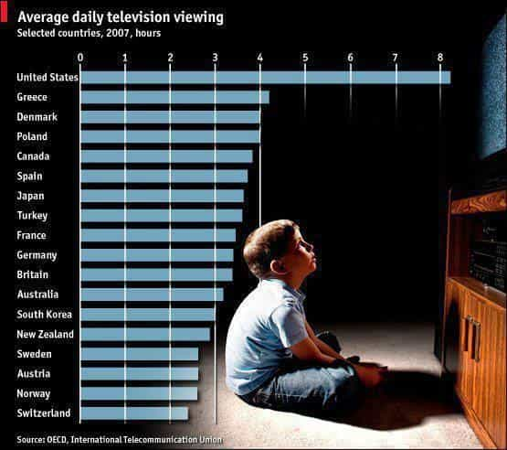
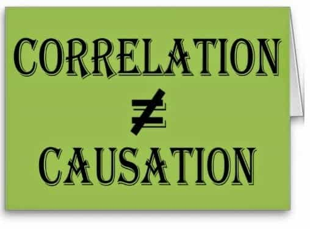

< < < Back
How Mainstream TV Uses Emotional Triggers To Sway Political Opinion – Return Of Kings
I went to visit my family for Thanksgiving, and as usual, I was confronted with numerous blue pill beliefs. While I’m no longer annoyed by these things, because I’ve gone through the “Return Journey” phase of swallowing the red pill, I did notice something that was extremely disturbing.
As I grew tired of arguing over basic political, economic, and gender points, I meandered downstairs to my family’s recreation room. There was a group of my younger relatives, aged 16-20, watching some show on Netflix about trans-gendered individuals.
I don’t know what the show was called, but one thing that really struck me was the show’s uncanny ability to use emotionally charged scenes and drama to elicit a feeling of compassion for the characters. In other words, numerous TV shows are now starting to take advantage of our natural empathy, and using it to sway our political and social opinions.
Emotionally Gripping
As I stood behind the couch watching a few minutes of this transgender show, I saw a very heart wrenching scene take place. Although the nuances of the story line were lost to me, I gathered enough information to see what was going on.
Basically, some guy was getting surgery to turn into a woman. As he was in the operating room, something went terribly wrong, and despite the surgeons’ desperate attempts to save him, he ended up perishing.
The following scene was comprised of extremely grief-inducing piano music played to various clips of the man’s children all mourning their loss. While this may seem innocuous, or like it’s just “creative, dramatic television,” I believe that it’s actually something far more sinister.
What’s going on here, is that the elites (because remember, this is a top down operation) are trying to traumatize the average American youth with images of the “horrors that transgender people go through!” They’re using television to create these emotional “triggers,” if you will, that will be ignited anytime someone says something against transgenders.
In other words, the trauma that occurs from becoming engrossed in this TV show (in our example) leaves an emotional residue of sorts, so that whenever the topic of transgenderism is brought up in conversation, the viewer subconsciously remembers the emotions associated with the topic which the TV show implanted into his mind.
Emotional Triggers

Television erodes your ability to think
This became abundantly clear to me as I was arguing with a friend from the West Coast over transgenderism. I very calmly said that I believe it’s a mental illness, and should be treated as such. I said that these people need help, and we shouldn’t encourage them. I backed my assertion by referencing how the chief psychologist at Johns Hopkins Hospital has vehemently called out doctors who perform transgender surgeries as “collaborating with a mental illness for profit.”
Despite my calm and collected assertions, she grew EXTREMELY emotional and automatically assumed a whole host of things about me:
- I’m a disgusting, careless sociopath
- I have no sympathy for others’ suffering and I’m a cold-hearted bastard
- I vehemently hate anyone who’s different than me
Despite the fact that none of these things are true, it became clear to me why she automatically believed this about me: the TV shows that she watches had been subtly implanting little emotional biases into her brain. This is how manipulative our “real” media is.
What happened, in psychological terms, was that as I was calmly explaining my perspective on transgenderism, her subconscious was flooded with all of the EMOTIONS that she associates with the topic:
- All of the pain and grief she experienced from TV shows depicting transgender “issues”
- How Bruce Jenner is a “hero,” and how much mainstream “opposition” he encountered when coming out
- All of the anger she experienced when the token “anti-transgender person” in each show was a huge dick to the main character (more on this in the next section)
All rational thought was completely stopped, as she had literally been trained to elicit a certain response whenever the topic of transgenderism is brought up. Do you see my point? By repeatedly exposing people to scenes that elicit sympathy for transgenders, the media is engineering a widespread social response in favor of it.
Token Characters

“I’m the stereotypical jock that beats the shit out of flamboyant homosexuals!”
As I alluded to before, another underhanded tactic that mainstream TV shows use is that they never have a rational, level-headed man who supports traditional marriage and normal heterosexuality. Any time someone in mainstream media doesn’t support the main character’s disorder, he’s always portrayed as a complete asshole.
This can take the form of him beating up the main character, bullying the main character, or what have you. I recall several years ago there was ample talk at the work place over some “anti-homosexual” character in glee that smothered a smoothie onto a guy just because he was homosexual, or something ridiculous like that.
Despite the fact that NOBODY I know would do something like this, the elite-sponsored TV utilizes token characters in order to implant a certain idea into our heads—the idea that everyone who opposes deviant sexual orientations is a cold-hearted bully. I recall that this was pointed out to me by a Catholic high school teacher, and it didn’t make any sense to me back then (before homosexuality was normal).
Now, in retrospect, I’m extremely thankful that he planted that seed in my class’s mind. The more that I look at television through this lens, the more I see what he was talking about. There’s never a level-headed, confident, genuine man that has game, either. It’s always either a completely meek beta male, or a chauvinistic “bad boy” Hank-Moody type character (although I do love me some Hank Moody).
This phenomena is taken even further as the transgender or homosexual person in mainstream TV is almost always portrayed as some brave, sweet, sensitive soul, with a hard life. In other words, the elites are engineering a dichotomy as Roosh has referenced before.
The dichotomy is that you’re either a sweet, empathetic, gentle-hearted person who supports transgenderism and deviant sexual preferences, or you’re a complete asshole who bullies and berates people just because “you’re mean.” This use of labeling brainwashes others into IMMEDIATELY putting you into the “sociopathic jerk” category if you don’t support transgenderism, making any and all rational discourse folly.
Subtle Desensitization

The average American is desensitized for 8 hours a day.
Another terrifying event that comes to mind of the media’s disgusting methods was when I was watching a popular kid’s TV show known as “Adventure Time,” a year or two ago. Again, I was with my family for some holiday event (I can’t remember which), and recall some of the kids watching this show.
Despite the fact that it’s labeled as a kid’s show, I saw an insidious little dialogue take place that was meant to desensitize children to pedophilia. In the show, there was some ball going on (I assume it was like a “prom” type deal), and the old wizard was looking for a partner.
He ended up going with some underage girl, who was probably 60 years his prior, and when the main character pointed this out, the old wizard simply stated: “Age…is nothing but a number!” Upon which the characters started dancing and doing comical things to prevent any sort of rational thought occurring after this was said.
After seeing this I became extremely disgusted and turned off the television, but that’s beyond the point. Why is this type of dribble being used to brainwash our youth? Anyone with half a brain can see that the point behind this scene was to start subtly implanting the seeds of pedophilia into a child’s mind.
Again, the words of my wise old Catholic high school teacher come to mind. I’ll never forget when he told me that “in 15 years, pedophilia will become normal.” My entire class was shocked, and couldn’t comprehend such a thing happening. He said this in 2009, and it seems that his prediction is coming true.
“First it will start with the media,” he said. “They’ll have some show where they make jokes about it and they’ll keep the humor very lighthearted, never showing the actual act. They’ll begin the process of desensitizing you, then eventually some politician will bring it up, and it will be an official stance that other politicians will be forced to take. This will begin the process of slowly normalizing it.”
My God was this man spot on, because this is EXACTLY how the media sways our opinions.
Keep in mind that their methods are SUBTLE, and that’s the point—they want to keep it below the level of thought so that you never question what they’re teaching you. Any time a strange or ridiculous belief is asserted, they very quickly move into a joyful scene or celebration to not only prevent you from thinking too much about the ridiculous belief, but to have you associate happiness with it, as well, which brings me to my next point.
Association And Correlation Bias

There’s a very powerful phenomena in psychology known as association; this is sometimes also called the correlation bias, or “Illusory Correlation.” This is basically your mind’s tendency to look for relationships where there aren’t any.
For example, why do you think most modern girls aren’t girlfriend material? Why do you think that the average man is weak, pathetic, and emasculated? It’s because of the media’s tendency to slowly create illusory associations within your mind.
The media causes women to associate happiness and a successful life with the following:
- Being a man-hating feminist, who can’t submit to a strong, confident man
- Not cooking or cleaning, because that’s “sexist”
- Riding the alpha male cock carousel, and not getting married, because marriage is “oppressive”
The media creates a false correlation in women’s minds by constantly portraying bitchy, overly-masculine, slutty women as being empowered, sought-after, and happy. As any man who’s been learning game knows, this is absolute nonsense.
It doesn’t matter, though—once your brain has an association, it’s extremely difficult to get rid of it. This is why so many men are emasculated nowadays. It teaches us to associate:
- Being a weak bitch with getting a hot girlfriend
- Being a feminist and leftist with having girls think you’re noble and heroic
- Courting a slut with being a gentleman
As any modern man who reads the manosphere knows, these are completely fallacious beliefs. Being a weak, low-testosterone man will not in fact land you the girls. Being a screaming leftist who holds those “I’m a feminist because,” signs will not get you the approval of women, and courting a washed up slut does not make you a gentleman (it makes you stupid).
Despite the obvious illogical nature of these beliefs, because the mainstream media has 8 hours a day to indoctrinate us, most men end up buying into them wholeheartedly, and will even berate you for having game when you CLEARLY get more women than them.
“So What Can I Do?”

It’s time to dismantle the MSM.
First things first, stop watching mainstream media. In case you haven’t noticed, the MSM is starting to feel the effects of men waking up; in fact, they’ve recently gone on a long, drawn-out tirade about “fake news,” or in other words, news that is red-pilled.
I haven’t watched mainstream media EVER—the only time that I ever watch MSM is if they’re interviewing a pickup artist, a manosphere blogger, or if I’m trying to debunk their ludicrous reporting. I get almost all of my news from sites like ROK, Danger And Play, Info Wars, Natural News, and the people that I follow on Twitter.
In addition to only consuming a red-pilled information diet, ensure that your children don’t watch TV unarmed. I saw a phenomenal post recently on “How to Raise Red-Pilled Daughters,” and the ROK author talks about how he doesn’t flat out ban TV, but rather teaches his daughters to think rationally and learn to see the foolishness of MSM.
Aside from not watching MSM and raising your family to be skeptical of it, you can also support alternative media sites by simply tuning in. You don’t have to buy any of their products (although it helps); simply giving them your attention and leaving a thoughtful comment or two is enough to generate interest.
All in all, we’re facing extremely tumultuous times. More and more people are starting to break free of the MSM’s grip on their mind, but the men who get left behind end up more brainwashed than ever. Eventually, once the MSM dies, we can begin the long and arduous process of reclaiming our country—and this, my friends, is something I believe is worth fighting for.
Read More: Fact Checking Emotional Propaganda